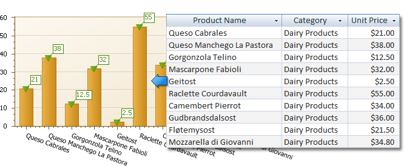
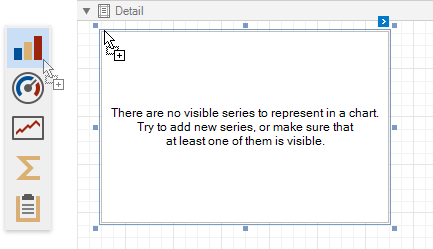
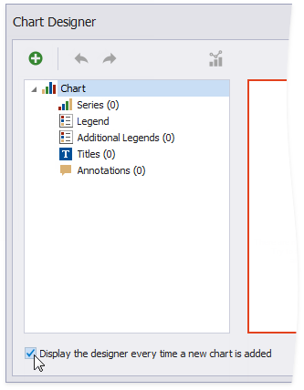
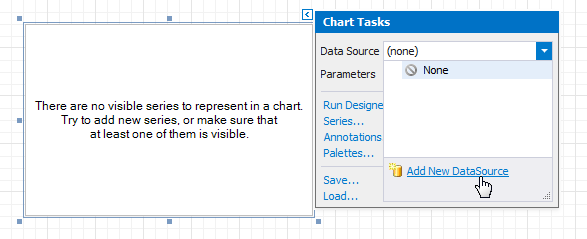
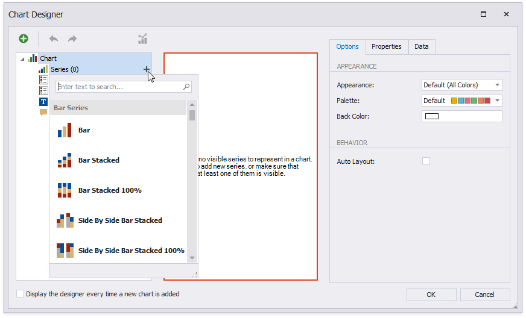
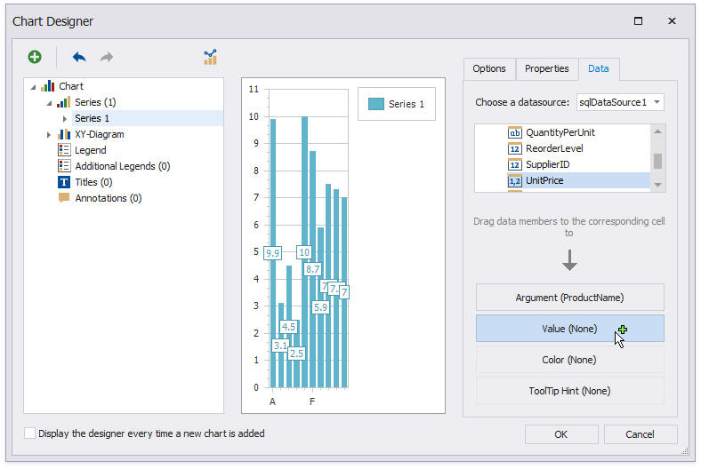
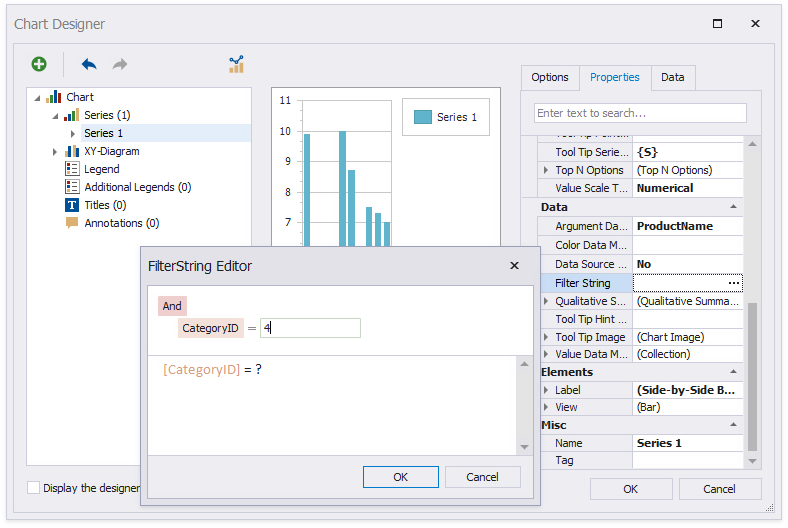
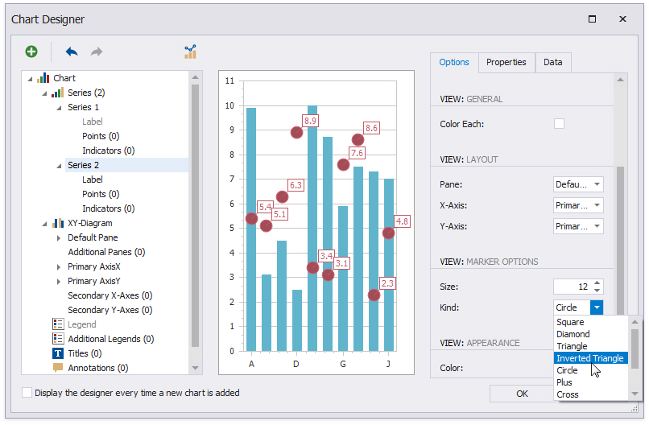
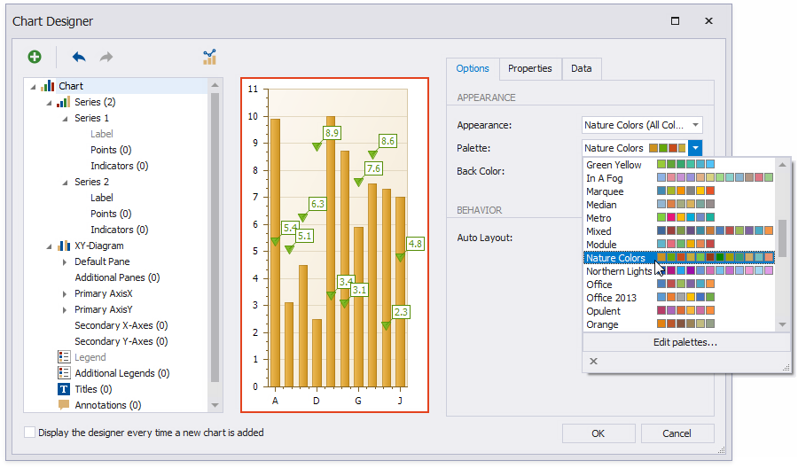
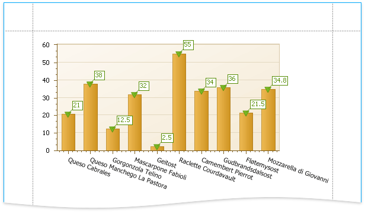

Add a Chart (Set Up Series Manually)
This document demonstrates how to add a chart to a report, provide data for chart series, and set up chart elements. This topic shows two chart series based on the same data source. You can use different data sources for different series.

Add a Chart to a Report
Drop the Chart control from the Toolbox onto the Detail band.

The Chart Designer wizard is invoked. Disable the Display the designer every time a new chart is added option if you do not want to trigger the wizard the next time you create a chart.

Close the wizard at this stage.
Click the chart's smart tag to bind the chart to data. Expand the Data Source property's drop-down and click Add New Data Source.

The invoked Data Source Wizard enables you to create a data source and bind the chart to it.
Note
Ensure that the report's Data Source property is set to None when you place a chart into the Detail band. Otherwise, the chart is repeated as many times as there are records in the report's data source.
Add Series to the Chart
Select the chart. Switch to the Chart Tools toolbar tab and click Run Designer.

Add a new series to the chart.
- Locate Series in the chart elements tree and click the plus button.
- Select the series type (for example, Bar) from the invoked list.

Populate the created series with points.
- Switch to the Data tab.
- Select a data source from the drop-down list.
- Drop data fields onto the Argument and Value cells to define the series' points.

Filter series data.
- Switch to the Properties tab.
- Click the Filter String property's ellipsis button.
- Construct filter criteria in the invoked FilterString Editor and click OK.

Create another series with the same settings. Select the Point view type for this series.
Customize the Chart
Improve the chart's appearance:
Remove the chart legend, because the chart series are bound to the same data. Select Legend in the chart elements tree and disable the Visibility check box in the Options tab.

Select the Label node under Series 1 and disable the Visibility check box to hide point labels.
Customize the Series 2 markers' appearance. Set Size to 12 and Kind to Inverted Triangle to replace the default circle with an upside down triangle.

Customize the chart's appearance settings. For instance, select Nature Colors from the drop-down Palette list.

View the Result
Switch to Print Preview to preview your report.
